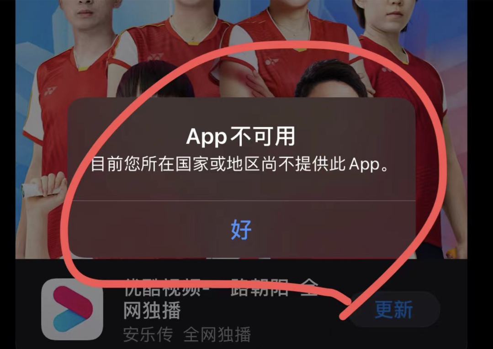
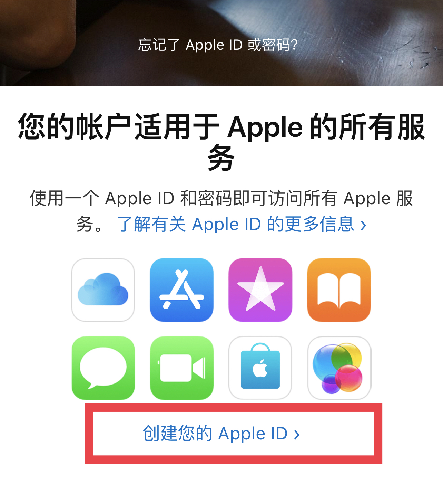

苹果常见问题
提示APP不可用怎么办
提示：iOS用户需要在App Store登陆您的【非大陆地区】Apple ID进行更新，具体步骤如下：
第一步：在App Store切换Apple ID：打开App Store应用 ，点击 App Store 右上角的头像，滑动到最底部，点击退出登录后，输入非大陆地区的Apple ID和密码重新登录。
注：如果提示“无法登录”，有可能是您近期切换登录频率太高，可以更换ID或者几个小时之后重试。如果ID被锁定，则需要进行验证或更换ID再试。 第二步：登录非大陆地区的Apple ID后，进入App Store搜索“AXS Wallet”，点击【Update】进行更新。
4、如果您没有【非大陆地区】Apple ID，建议您先注册，再更新，注册方法如下：
（1）浏览器输入链接 https://appleid.apple.com ，进入注册新Apple ID页面。
（2）填写相关信息：地区选择美国，输入之前没注册过苹果账户的邮箱地址和手机号，全部填写完成后点击继续。

（3）按提示输入邮箱和手机验证码，非大陆地区Apple ID就注册成功了。随后在App Store登录非大陆地区Apple ID，更新AXS钱包即可。